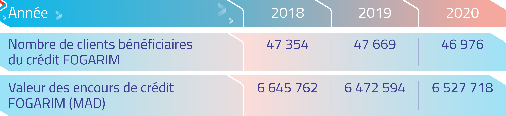

Un réseau
CIH BANK qui
compte plus de
300 agences
Depuis toujours, CIH BANK œuvre activement en faveur de la bancarisation des populations
défavorisées en mettant notamment à leur disposition des agences mobiles et des canaux de
communication adaptés. Leader dans l’octroi de crédits garantis par le dispositif FOGARIM,
la banque est également un acteur historique du financement de l’accès au logement social au
Maroc à travers le financement des acquéreurs et des promoteurs immobiliers.
Pour plus de proximité avec sa clientèle, notamment dans les régions les plus reculées du
Maroc, CIH BANK développe son réseau. L’objectif est de couvrir en priorité les zones
éloignées des grands centres urbains, où le besoin est le plus important. Aujourd’hui, les
307 agences de CIH BANK couvrent la quasi-totalité du territoire national. En 2020, 4
nouvelles agences ont été ouvertes en régions et 4 agences mobiles disposant d’un GAB
intégré proposent des services variés.
Le digital constitue également un levier pour favoriser la bancarisation des populations des
régions isolées. Il s’agit aussi d’un fort levier d’inclusion pour les jeunes,
particulièrement sensibles à ces nouveaux canaux de communication. Afin de toucher un public
le plus large possible en levant notamment les obstacles liés à la lecture, CIH BANK propose
depuis 2018 CIH VOICE, une application mobile qui permet, grâce à la lecture vocale en arabe
dialectal, de consulter son solde et historique et de réaliser certaines opérations
bancaires.
Fin 2019, la Banque a structuré sa filière réservée aux professionnels et aux TPE, pour une
plus grande proximité régionale. En octobre 2020, la Direction Régionale de l’Oriental a
ainsi formé 150 femmes de la ville de Berkane, au programme de soutien aux jeunes
entrepreneurs, Intelak, en collaboration avec l’association Ghazal.
